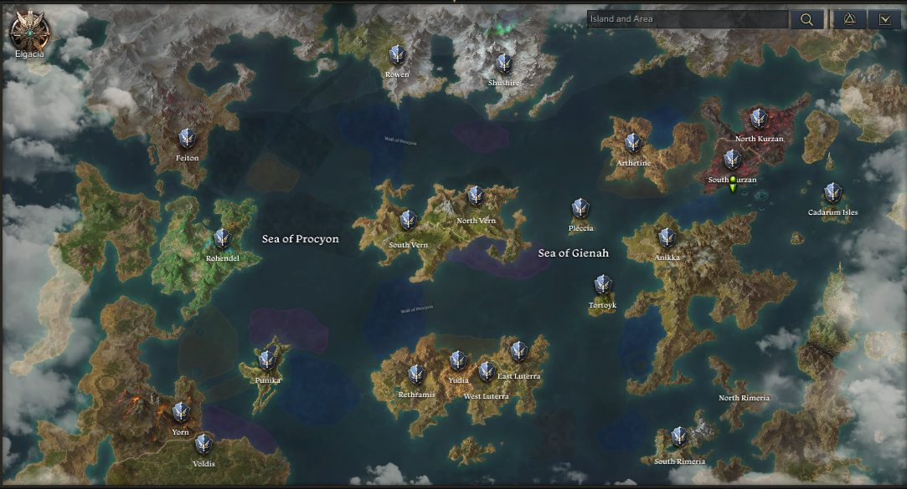

EL MUNDO DE LOST ARK
Un mundo por escuchar.
Cada lugar guarda una historia. Cada historia, una canción.
ESENKRUN FUTURO ATLAS MUSICAL
ARKESIA / MAPA DEL MUNDOEXPLORA EL HORIZONTE

EL MUNDO DE LOST ARK
Cada lugar guarda una historia. Cada historia, una canción.
